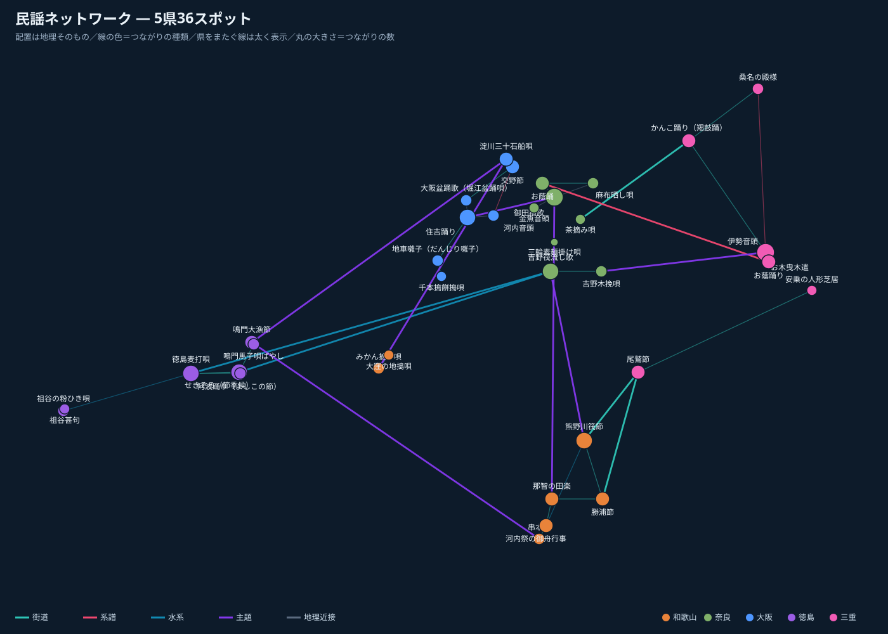

民謡ネットワーク ― 5県36スポット
スポット同士の「つながり」を、街道・水系・系譜・主題・地理近接の5つの規則でデータから類推した図。配置は地理そのもの。県をまたぐ線は太く描いてある。詳しい方法と読み解きは doc/network-analysis.md、元データは data/network.json。

読み取れたこと
- つながりは全45本、そのうち県をまたぐのは13本（約29%）
- 背骨は街道（24本）― 徒歩ロジーの裏付け
- ハブは お木曳木遣（三重）と 御田植歌（奈良）。観光の歌ではなく、労働と神事の歌が中心に来る
- 吉野筏流し歌は水系の橋 ― 吉野川を下って徳島の麦打唄・阿波踊りへ
- 孤立は1件だけ：三輪素麺掛け唄（山の辺の道の補強候補）